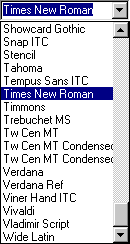
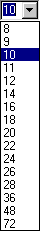

Le formatage
Une fois votre texte saisi au kilomètre, il vous faut
le mettre en forme, c'est-à-dire ajuster la mise en
forme des caractères et la mise en forme des paragraphes
qui constituent votre document. Mais voyons dans un
premier temps la mise en forme des caractères. La mise
en forme de caractères peut intervenir:
* En sélectionnant les caractères souhaités
puis en leur appliquant la mise en forme.
* En appliquant la mise en forme au niveau du point
d'insertion I . Ceci dit, une commande de mise en
forme ne se désactive pas automatiquement. Il faudra
la désactiver pour reprendre une saisie
"normale".
Si l'on admet que le texte à mettre en forme a déjà
été saisi, pour mettre en forme une lettre, un mot, un
groupe de mots ou un paragraphe, il suffit de
sélectionner les caractères correspondants (comme vu
dans le chapitre Généralités) puis de:
* Choisir la police de caractères en
cliquant sur la petite flèche à droite de
la commande Police de la barre d'outils Mise
en forme puis en sélectionnant la police
désirée dans la liste de choix.
|

|
* Choisir la taille de police en cliquant
sur la petite flèche à droite de la
commande Taille de la barre d'outils Mise en
forme puis en sélectionnant la taille
désirée dans la liste de choix. Ou alors en
la saisissant directement à l'aide du
clavier.
|

|
* Mettre en gras selon les
trois possibilités offertes:
- Aller dans le menu Format puis cliquer sur
"Gras" ou
- Cliquer sur l'icone "Gras" de la
barre d'outils Mise en forme ou
- Utiliser le raccourci clavier en appuyant
simultanément sur les touches
"Ctrl" et "B".
* Mettre en italique selon les
trois possibilités offertes:
- Aller dans le menu Format puis cliquer sur
"Italique" ou
- Cliquer sur l'icone "Italique"
 de la
barre d'outils Mise en forme ou de la
barre d'outils Mise en forme ou
- Utiliser le raccourci clavier en appuyant
simultanément sur les touches
"Ctrl" et "I".
* Mettre en souligné selon
les trois possibilités offertes:
- Aller dans le menu Format puis cliquer sur
"Souligné" ou
- Cliquer sur l'icone "Souligné" de la
barre d'outils Mise en forme ou
- Utiliser le raccourci clavier en appuyant
simultanément sur les touches
"Ctrl" et "U".
* Mettre en barré haut selon les
trois possibilités offertes:
(utile pour des physiciens par exemple)
- Aller dans le menu Format puis cliquer sur
"Barré haut" ou
- Cliquer sur l'icone "Barré haut" de la
barre d'outils Mise en forme.
- Utiliser le raccourci clavier en appuyant
simultanément sur les touches
"Ctrl" et "T".
* Mettre en barré
selon les deux possibilités offertes:
- Aller dans le menu Format puis cliquer sur
"Barré" ou
- Cliquer sur l'icone "Barré" de la
barre d'outils Mise en forme.
* Mettre en exposant selon
les trois possibilités offertes:
- Aller dans le menu Format puis cliquer sur
"Exposant" ou
- Cliquer sur l'icone "Exposant"
 de la
barre d'outils Mise en forme ou de la
barre d'outils Mise en forme ou
- Utiliser le raccourci clavier en appuyant
simultanément sur les touches
"Ctrl" et "=".
* Mettre en indice selon
les trois possibilités offertes:
- Aller dans le menu Format puis cliquer sur
"Indice" ou
- Cliquer sur l'icone "Indice"
 de la
barre d'outils Mise en forme ou de la
barre d'outils Mise en forme ou
- Utiliser le raccourci clavier en appuyant
simultanément sur les touches
"Ctrl" et "-".
Bien sûr il est possible de combiner
plusieurs commandes de mise en forme tel que
gras + italique + souligné + barré + exposant/indice
Toutes ces commandes ci-dessus sont récapitulées
dans la boite de dialogue "Police". Pour
retrouver cette boite de dialogue, il existe trois
solutions:
- Aller dans le menu Format puis cliquer sur
"Police..." ou
- Effectuer un clic droit de la souris sur un mot
puis cliquer sur l'avant dernière option (Police...)
du menu contextuel ou
- Utiliser le raccourci clavier en appuyant
simultanément sur les touches "Ctrl"
et "D".

Toutes les commandes de mises en forme vues
précédemment sont reprises ici avec en plus:
* Le choix de la couleur. Pour cela, il faut
cliquer sur la petite flèche à droite de la
commande Couleur de la rubrique Effets puis en
sélectionnant la couleur voulue dans la liste de
choix.
* Le choix des scripts de langue disponibles pour
la police spécifiée. Pour cela, il suffit de
cliquer sur la petite flèche à droite de la
commande Script puis de sélectionner le script voulu
dans la liste de choix.
De plus, dans la zone "Exemple" apparaît un
aperçu de la mise en forme de l'écriture choisie. Une
fois les attributs sélectionnés valider en cliquant sur
le bouton OK ou cliquer sur le bouton Annuler pour ne pas
prendre en compte les modifications.
|